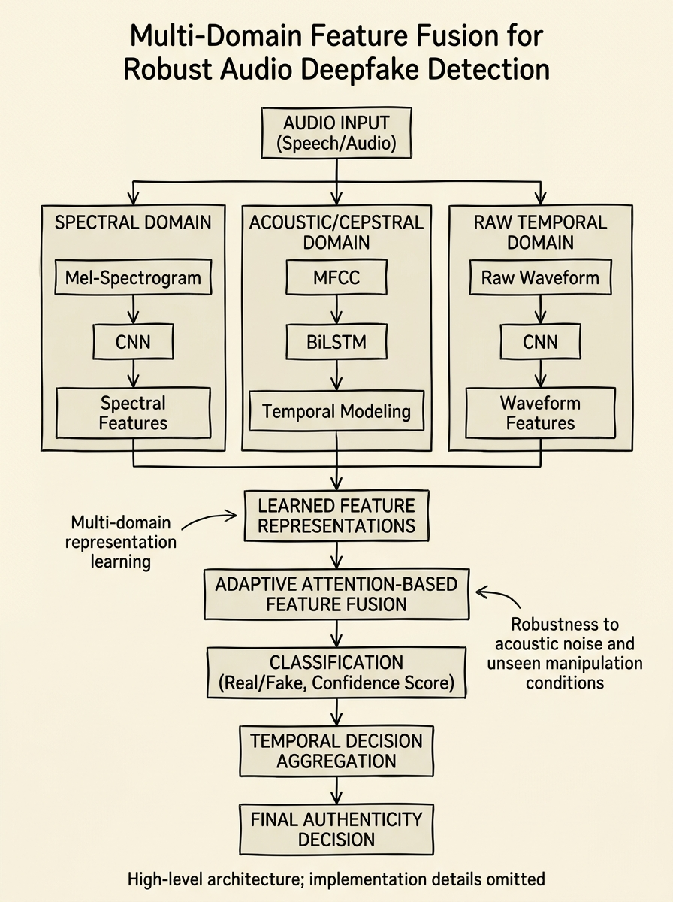
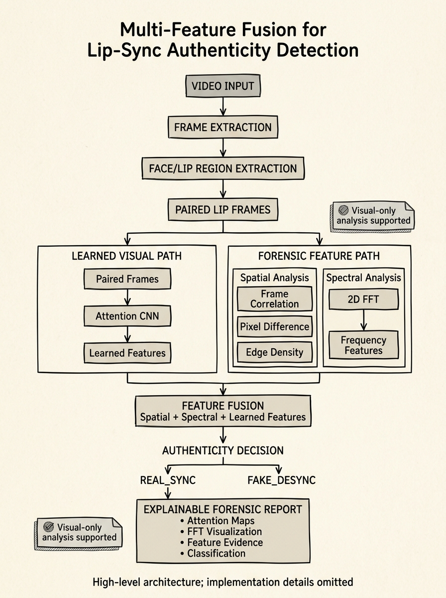

Indian Patent Applications
3 Patent Applications Filed · 2025–2026
Cognitive-State-Aware Adaptive Information Security
A middleware system that infers user cognitive state from non-biometric behavioral signals (typing rhythm, navigation patterns, task timing) and dynamically adjusts security enforcement without replacing existing infrastructure. When cognitive load or vulnerability is detected, the system increases verification friction, temporarily restricts high-risk actions, or escalates monitoring.

Multi-Domain Audio Deepfake Detection
A parallel three-branch deep learning architecture that simultaneously analyzes audio across spectral (Mel-spectrogram CNN), acoustic/cepstral (MFCC BiLSTM), and raw temporal (waveform CNN) domains. An adaptive attention-based fusion mechanism dynamically weights features from each branch, and temporal decision aggregation produces robust authenticity decisions.

Lip-Sync Authenticity Detection
A dual-path forensic analysis system combining learned visual features (paired-frame attention CNN) with handcrafted forensic features (spatial analysis via frame correlation, pixel difference, edge density; spectral analysis via 2D FFT). Feature fusion combines all paths for authenticity classification, outputting explainable forensic reports with attention maps, FFT visualizations, and feature evidence.
